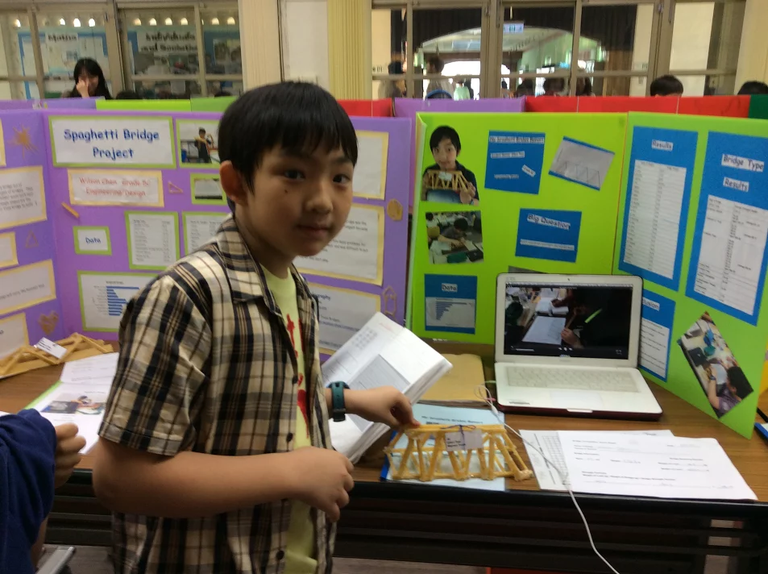

Eric Chen is a motivated student that liked every classes in school. He likes to write homeworks, read books, and not playing games. He likes traveling to places in his vacation times, espicially to Japan. He likes buying stationeries there. In his spare time, he likes to listen to music or watch movies with his parents. He is currently a grade 7 student in KAS where he continues to enjoy learning at school.
Author 2
Elliot Tsai

Hi, my name is Elliot Tsai, my favorite subject to study at school is math, because I like to count numbers or play math games in class. My hobby is playing computer games and watching TV. Sometimes, I would read a book before I go to bed at night. I like to play tennis and soccer during break time at school or on the weekends. I am very proud of myself and my family was really proud of me too.
I am interested in learning new languages. I speak 3 languages right now, which are taiwanese, chinese and English. I speak chinese at home with my family. at school, I speak English with my friends and teachers. Sometimes I speak Taiwanese with my grandparents when I go to visit them. I hope to learn Japanese in the future. I like to read comedy books, because it makes me relaxed and it is fun to read.
My favorite book is “the diary of a wimpy kid” because it’s very funny but sometimes it’s also very silly. I don’t think something that silly can happen in real life. I also like to watch the movie too. It is even funnier than the book.
The school I go to is Kaohsiung American School. It is a very big and beautiful school. I have a lot of friends at school and we like to play together all the time. I enjoy seeing my friends during the weekend so we can play ball or play video games.
I lived in California for a year when I was younger. I lived with my family and my cousins. The reason why we came back to taiwan after a few months is because my brother didn’t like the classes that he was taking there. California is very different from Taiwan because the houses are very big and we had to drive everytime we go out.